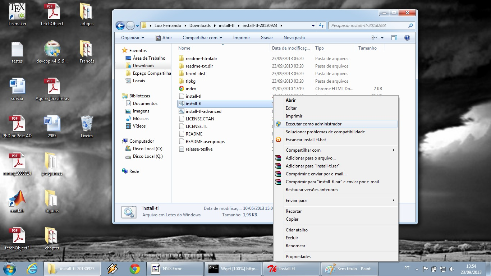
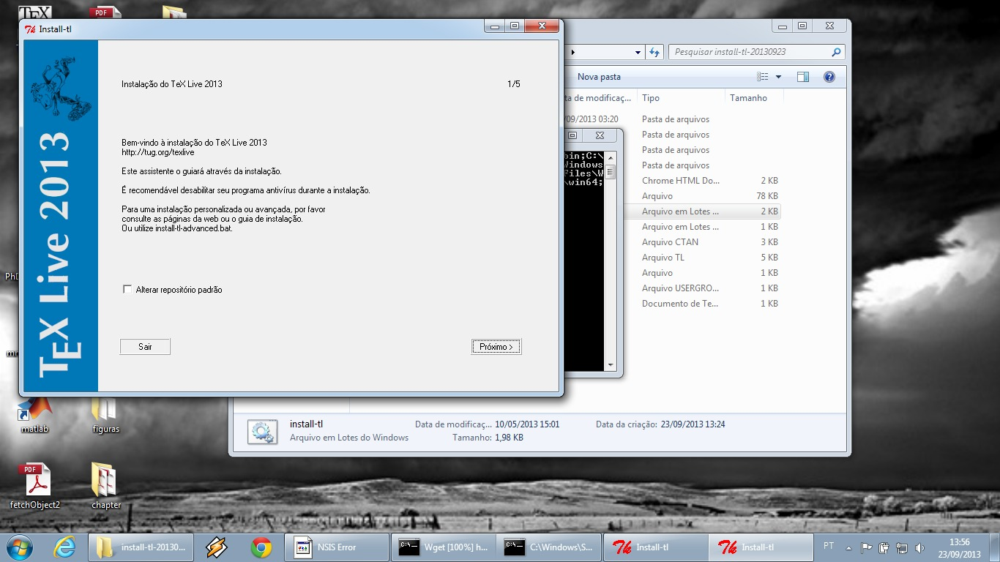

TeX Live 2013 - Windows 7
Para instalar o TeX Live em uma máquina com Windows 7, primeiramente baixe esse arquivo. Depois de baixá-lo, descomprima-o.
Dentre os arquivos criados você irá encontrar o install-tl.bat. Selecione-o com um click direito, abra o menu de opções com um click esquerdo e selecione "Executar como adminstrador" como ilustrado na figura abaixo.
Será pedido para confirmar a execução como adminstrador, confirme. É recomendado desabilitar anti-vírus e firewall pois estes podem impedir a instalação.
A janela de instalação do TeX Live irá aparecer como ilustrado na figura abaixo.
Escolha a opção "Próximo" algumas vezes até ele começar a abaixar a distribuição (isso deve demorar vários minutos). Depois que terminar de baixar os pacotes, a instalação será concluída e você precisará escolher a opção "Encerrar".
Escrito e mantido por Raniere Silva.